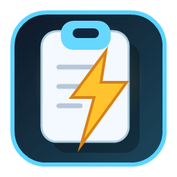

✦
오늘 할 일을 줄이는 가장 좋은 방법은…
●복사한 텍스트 · 방금 전

copylightA calmer clipboard for Windows
방금 복사한 문장, 어제 저장한 이미지, 자주 쓰는 답변까지. Copylight는 작업 흐름을 끊지 않고 필요한 클립을 다시 꺼내줍니다.
복사한 텍스트 · 방금 전
클립보드에 저장됨 · 12분 전
링크 · 어제
텍스트 · 월요일
The small utility that stays out of your way
클립보드가 매번 새로고침되는 느낌이 싫었다면, 이제 필요한 것만 조용히 쌓아두세요. Copylight는 화면 한구석에 머물다가 필요할 때만 나타납니다.
어떤 앱을 쓰고 있어도 같은 단축키로 클립보드를 불러옵니다. 마우스를 찾느라 흐름을 놓치지 마세요.
클립은 로컬에 머뭅니다. 계정도, 광고도, 복잡한 설정도 없습니다.
핀, 그룹, 라벨, 다중 선택으로 자주 쓰는 클립을 나만의 방식으로 정리하세요.
Copylight is the tiny
memory layer between
your thoughts and your work.
— made for people who copy a lot
Coming to Microsoft Store
Copylight는 출시 기념 가격 ₩1,200으로 시작합니다.
스토어 출시 소식 기다리기 ↗Microsoft Store 등록 후 이 버튼이 구매 링크로 연결됩니다.